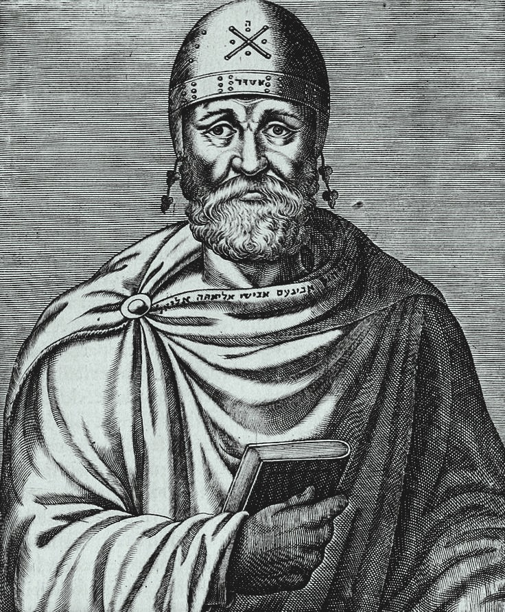
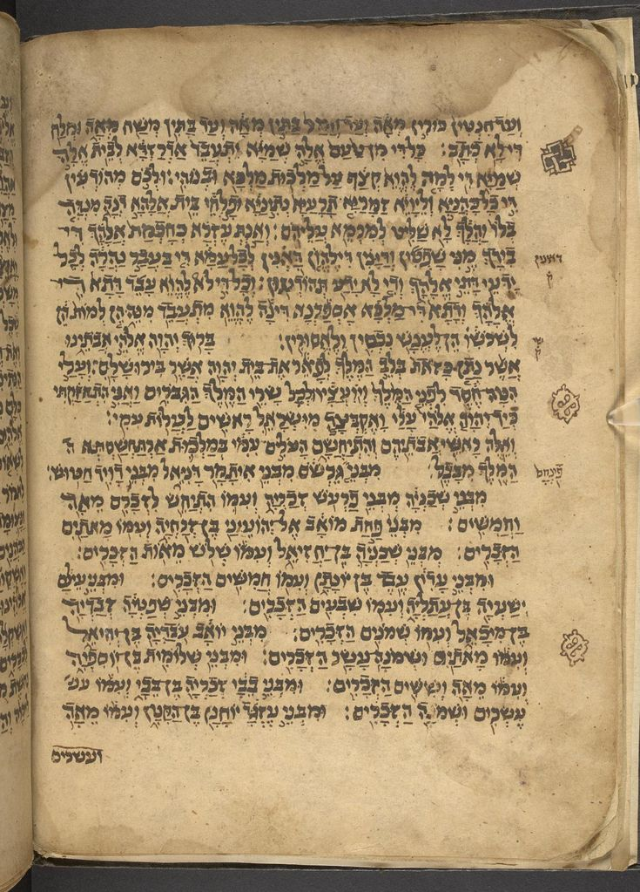
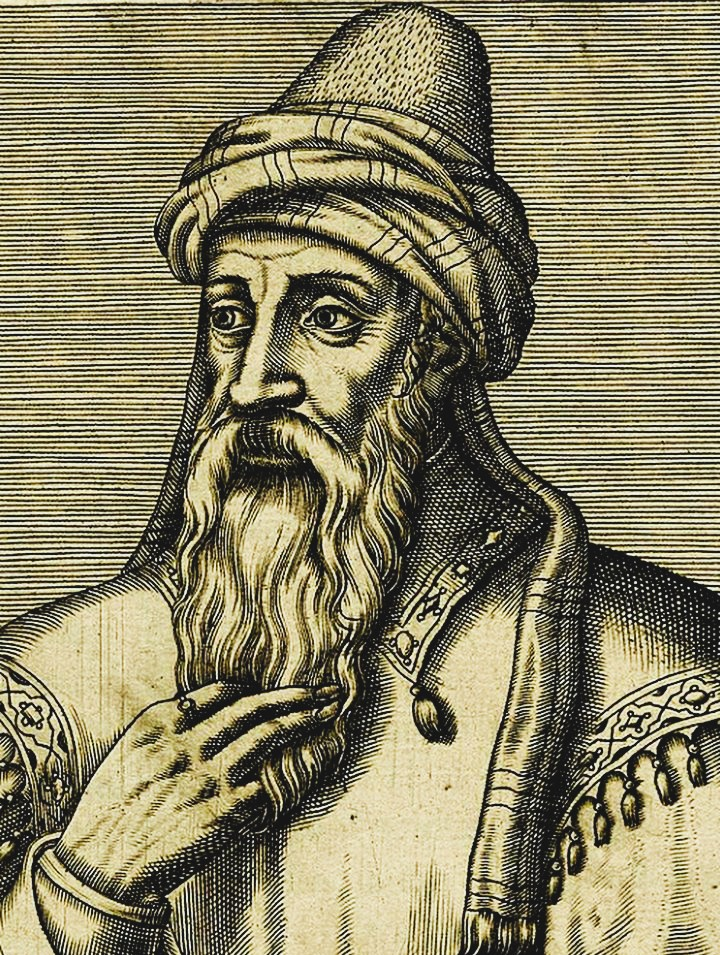
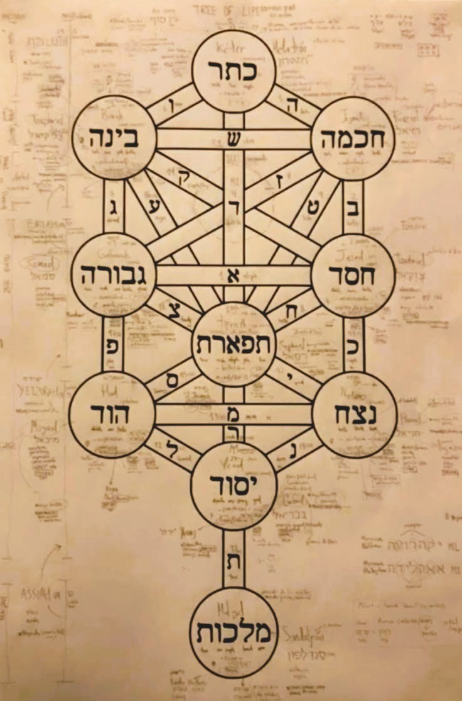

The history of philosophical thought within Jewish intellectual traditions — from biblical wisdom and the culture of interpretation to Hellenistic encounters with Greek philosophy, medieval rationalism, Maimonides, Kabbalah, and the major transformations of modern Jewish thought.
Jewish philosophy is one of the world's oldest and most intellectually diverse traditions of sustained reflection on God, reality, knowledge, ethics, law, human freedom, suffering, and the meaning of human existence. Yet the history of Jewish thought cannot be reduced to philosophy in the modern academic sense. Biblical literature, rabbinic interpretation, legal reasoning, mystical speculation, poetry, theology, and philosophical argument developed alongside one another, often overlapping while retaining their own distinctive purposes and methods.
Some of the earliest foundations of Jewish philosophical reflection appear in the Hebrew Bible and its wisdom literature. The books of Proverbs, Job, and Ecclesiastes confront questions concerning justice, suffering, wisdom, mortality, and the limits of human understanding. These works do not normally present philosophical systems in the style of Plato or Aristotle, but they repeatedly investigate problems that later became central to philosophy: Why do the righteous suffer? Can human wisdom understand the order of the world? What makes a life good? And what remains meaningful in the face of death?
Jewish thought later developed through encounters with other civilizations and intellectual traditions. During the Hellenistic period, Jewish thinkers engaged with Greek language and philosophy. In the rabbinic world, the Mishnah and Talmud cultivated complex traditions of interpretation and argument. During the Middle Ages, Jewish philosophers writing in Arabic, Hebrew, and other languages entered into sustained dialogue with Aristotelianism, Neoplatonism, and the philosophical traditions of the Islamic world.
This page follows that long and complex history: from biblical wisdom and ancient Israelite thought to Philo of Alexandria, rabbinic interpretation, medieval rationalism, Maimonides, Kabbalah, and the transformations of modern Jewish philosophy. Together, these traditions reveal a continuing intellectual conversation about reason and revelation, the interpretation of sacred texts, the nature of God, ethical responsibility, human freedom, and the meaning of existence.
Biblical and Israelite traditions develop reflections on covenant, justice, wisdom, prophecy, suffering, and human responsibility
Hellenistic Judaism develops through encounters between Jewish traditions and Greek language, culture, and philosophy
Rabbinic Judaism develops major traditions of legal interpretation, debate, ethics, and textual reasoning through the Mishnah and Talmud
Medieval Jewish philosophy develops in close contact with the philosophical and scientific cultures of the Islamic world
Moses Maimonides creates one of the most influential syntheses of Jewish law, philosophy, Aristotelian thought, and rational inquiry
Major Kabbalistic traditions develop influential mystical accounts of God, creation, divine emanation, and the structure of reality
Modern Jewish philosophy develops through debates about modernity, secularism, ethics, dialogue, identity, history, and human responsibility
The earliest foundations of Jewish thought developed in the ancient Near East, a world shared with the civilizations of Mesopotamia, Egypt, Anatolia, Persia, and the Levant. Ancient Israelite communities developed their intellectual and religious traditions within this wider environment of political change, cultural exchange, migration, war, and imperial power. Their writings reflected not only distinctive religious commitments but also universal human concerns about justice, suffering, death, political authority, and the relationship between humanity and the cosmos.
A central idea within biblical tradition is the covenantal relationship between God and the people of Israel. This framework connected religious life with ethics, law, memory, and collective responsibility. Questions about how human beings ought to live were therefore not treated as entirely separate from questions about justice, community, and divine command. The prophets repeatedly criticized political corruption, exploitation, violence, and empty religious observance, making moral responsibility a central concern of Israelite intellectual life.
At the same time, biblical literature contains deep tensions and debates rather than one simple philosophical doctrine. Some texts emphasize the intelligibility and justice of the world, while others confront experiences that appear to challenge any simple moral order. The book of Job asks why a person who appears righteous can suffer catastrophically. Ecclesiastes questions whether human labor, achievement, and wisdom can overcome the transience of life.
For this reason, the history of Jewish philosophy cannot be understood simply as the history of individual philosophers. It emerged from a much broader culture of reading, interpretation, disagreement, and intellectual inheritance. Sacred texts became objects of continuous examination, while later thinkers repeatedly asked how ancient revelation should be understood in changing historical and intellectual circumstances.
Jewish philosophical reflection begins, in part, with traditions of wisdom. The Book of Proverbs presents wisdom as practical and ethical understanding: a person must learn how to speak, act, judge, govern desires, and live responsibly within a community. Wisdom is therefore not merely abstract knowledge. It concerns character, judgment, discipline, and the ability to recognize the consequences of human action.
The Book of Job introduces a much more difficult problem. Job suffers despite being presented as a righteous man, challenging the assumption that prosperity always follows virtue and suffering always follows wrongdoing. His friends repeatedly attempt to explain his suffering through conventional moral reasoning, but their explanations prove inadequate. The work therefore becomes a profound exploration of the limits of human attempts to explain suffering and divine justice.
Ecclesiastes develops another striking form of reflection. Its author repeatedly observes the instability and transience of human life. Wealth, achievement, pleasure, political power, and even wisdom cannot permanently overcome mortality. The text does not simply reject human life as meaningless, but it questions whether human beings possess the knowledge or power required to master existence completely.
Together, these traditions reveal a philosophical tension that would remain important throughout Jewish thought. Human beings are called to pursue wisdom and ethical responsibility, yet their knowledge remains limited. They seek justice but encounter suffering; they build, govern, love, and learn, yet remain mortal. Jewish philosophical reflection repeatedly returned to this tension between the human desire for understanding and the limits placed upon human existence.

After the conquests of Alexander the Great, Jewish communities became part of a much wider Hellenistic world. Greek language, education, political institutions, and philosophical traditions spread across the eastern Mediterranean and Near East. Jewish communities responded to this environment in diverse ways, and intellectual life increasingly involved questions about how inherited traditions should relate to Greek culture and philosophy.
Alexandria became one of the most important centers of this encounter. The city contained a major Jewish community and was also a center of Hellenistic learning. Jewish thinkers writing in Greek could therefore address philosophical questions using concepts associated with Plato, the Stoics, and other Greek traditions while remaining deeply engaged with the interpretation of Jewish scripture.
The most famous philosopher associated with this world was Philo of Alexandria. Philo attempted to interpret the Torah in ways that could reveal philosophical meaning beneath the literal narrative. Allegorical interpretation allowed him to connect biblical figures and events with questions about reason, virtue, the soul, the cosmos, and the nature of God. His thought cannot be reduced simply to Greek philosophy in Jewish clothing; it represented a complex attempt to bring different intellectual languages into conversation.
Philo's use of the concept of the Logos became especially influential. The Logos could be understood as connected with divine reason and the intelligible order through which the world becomes comprehensible. Later religious and philosophical traditions engaged with similar concepts in different ways, making Philo an important figure in the history of Jewish, Hellenistic, and early religious philosophy.
The encounter between Judaism and Greek philosophy established a problem that would continue for centuries: Can reason and revelation support one another? Are philosophical truths compatible with sacred tradition? And when philosophical reasoning appears to conflict with the literal meaning of scripture, how should the text be interpreted? Medieval Jewish philosophers would return to these questions with extraordinary sophistication.

After the destruction of the Second Temple in 70 CE, Jewish intellectual life increasingly developed through rabbinic institutions and traditions of study. The Mishnah and later the Talmud became central bodies of literature for the discussion of law, interpretation, ethics, ritual, and communal life. Their intellectual style differs significantly from the systematic treatises associated with Greek philosophy, yet they developed powerful forms of analysis and argument.
Rabbinic reasoning often proceeds through disagreement. Different interpretations are presented, objections are raised, earlier authorities are examined, hypothetical cases are considered, and distinctions are drawn between apparently similar situations. This method created an intellectual culture in which argument was not necessarily a sign that inquiry had failed. Disagreement could itself become a means of clarifying a problem.
The interpretation of texts also became a major philosophical issue. What does a sacred text mean? Is meaning exhausted by the literal wording, or can deeper legal, ethical, symbolic, and interpretive dimensions be discovered? Rabbinic traditions developed elaborate methods for relating written texts to oral interpretation, precedent, and changing practical circumstances.
These traditions also addressed philosophical questions about human responsibility and law. A legal system must determine intention, consequences, obligations, evidence, and competing duties. Rabbinic discussions therefore frequently examined problems that modern philosophy would recognize as questions in ethics, jurisprudence, epistemology, political philosophy, and the philosophy of language.
Rabbinic thought should not simply be relabeled as Greek-style philosophy. Its purposes and methods developed within a distinctive religious and legal culture. Nevertheless, the traditions of argument, interpretation, conceptual distinction, and critical debate that it cultivated became essential parts of the wider intellectual environment from which later Jewish philosophy emerged.
Medieval Jewish philosophy flourished within a world of remarkable intellectual exchange. Jewish thinkers lived in regions shaped by Islamic civilization and participated in cultures in which Arabic had become a major language of philosophy, science, medicine, mathematics, and theology. Greek philosophical works had been translated and interpreted in Arabic, creating an intellectual environment in which Jewish thinkers could engage with Aristotle, Plato, Neoplatonism, and other traditions through new philosophical developments.
One of the earliest major medieval Jewish philosophers was Saadia Gaon, who attempted to defend and explain Jewish belief through systematic rational argument. Saadia addressed questions concerning the creation of the world, the existence and unity of God, human freedom, prophecy, and the relationship between reason and revelation. His work helped establish a tradition in which philosophical reasoning could be used to clarify religious commitments rather than simply oppose them.
Other Jewish philosophers developed very different approaches. Solomon ibn Gabirol became associated with a philosophical system strongly influenced by Neoplatonic ideas, while thinkers such as Bahya ibn Paquda explored the relationship between ethical and spiritual life. Judah Halevi, by contrast, expressed important criticisms of the claim that philosophical reason alone could provide the highest form of religious understanding.
The medieval period therefore did not produce a single Jewish philosophical doctrine. It produced debates. Some thinkers placed great confidence in rational demonstration, while others emphasized history, prophecy, revelation, religious experience, or the limits of abstract speculation. Jewish philosophy developed precisely through these disagreements about what reason can accomplish and where its limits might lie.
The intellectual environment of the Islamic world was crucial to this development. Jewish philosophers did not merely receive ideas passively; they translated, interpreted, criticized, and transformed the philosophical traditions available to them. Medieval Jewish philosophy was therefore part of a wider Mediterranean and Near Eastern conversation involving Muslim, Jewish, and later Christian thinkers.

Moses Maimonides, also known as Rambam, was born in Córdoba in 1138 and became one of the greatest Jewish philosophers and legal thinkers of the Middle Ages. His life unfolded across the interconnected intellectual worlds of al-Andalus, North Africa, and Egypt. Maimonides was not only a philosopher but also a major authority on Jewish law and a physician, illustrating the broad range of disciplines that could belong to a medieval intellectual life.
His philosophical masterpiece, The Guide for the Perplexed, addresses readers struggling with an apparent conflict between philosophical reasoning and religious tradition. Maimonides argued that many biblical passages should not always be interpreted in a crude literal manner. When scripture appears to attribute physical qualities to God, philosophical reflection can reveal the inadequacy of a purely anthropomorphic interpretation.
One of Maimonides's most important ideas is often described as negative theology. Human language is limited when speaking about God. To say exactly what God is may falsely impose human categories upon an infinite and fundamentally different reality. Maimonides therefore emphasized the importance of understanding what cannot properly be said about God, protecting divine transcendence from overly literal descriptions.
Maimonides also engaged deeply with Aristotle and the philosophical traditions that had developed around Aristotelian thought in the Islamic world. Yet he did not simply accept every philosophical conclusion. The questions of creation, prophecy, providence, law, and the limits of human knowledge required careful interpretation rather than simple submission to either philosophy or literalism.
His importance lies partly in the ambition of his synthesis. Jewish law, ethics, metaphysics, psychology, political order, and intellectual perfection were treated as connected dimensions of human life. Maimonides's influence extended far beyond Judaism, shaping later philosophical discussions and becoming important to medieval Christian thinkers as well as subsequent Jewish philosophy.

Alongside rationalist philosophy, Jewish intellectual history also developed powerful mystical traditions. Kabbalah became an increasingly influential form of Jewish interpretation during the medieval period, particularly from the late twelfth and thirteenth centuries onward. Its thinkers and texts explored questions about the hidden structure of reality, the nature of divine manifestation, creation, language, and humanity's relationship with the sacred.
A central Kabbalistic concept is Ein Sof, the infinite and ultimately unknowable divine reality. Kabbalistic traditions developed elaborate ways of thinking about how the finite world could exist in relation to an infinite God. The doctrine of the sefirot described dimensions or modes through which divine life and creative activity could be understood symbolically.
The Zohar became one of the most influential works of Kabbalistic literature. Through symbolic interpretation, narrative, and mystical speculation, Kabbalistic thinkers explored dimensions of scripture that rationalist interpretation did not always emphasize. Language, letters, divine names, and biblical stories could become symbols through which hidden structures of reality were contemplated.
The relationship between philosophy and Kabbalah was complex. Kabbalists sometimes criticized forms of philosophical rationalism that appeared to make abstract intellectual knowledge the highest goal of religious life. Yet the two traditions also influenced one another. Some mystical thinkers adopted philosophical vocabulary and problems, while others developed intellectual systems that attempted to integrate mystical and rational forms of understanding.
Kabbalah therefore represents an important reminder that the history of Jewish thought cannot be described solely as a march toward rationalism. Different intellectual traditions offered different accounts of how human beings encounter reality. Rational argument, textual interpretation, legal reasoning, mystical experience, and symbolic speculation all remained part of the larger and sometimes contested world of Jewish intellectual history.
The modern period transformed Jewish philosophy by changing the historical conditions under which Jewish thinkers worked. The growth of modern science, political emancipation, secular institutions, nationalism, and new forms of historical criticism created questions that could not simply be answered by repeating medieval arguments. Jewish philosophers increasingly asked how inherited religious traditions should relate to the intellectual and political conditions of modern life.
Baruch Spinoza occupies a controversial and unusual position in this history. Born into a Jewish community in Amsterdam, he developed a philosophical system that radically challenged traditional conceptions of God, scripture, freedom, and religious authority. His philosophy of a single infinite substance became one of the major systems of early modern philosophy, while his relationship with Judaism remained a subject of continuing historical and philosophical debate.
Moses Mendelssohn became an important figure in the Jewish Enlightenment, or Haskalah. He attempted to defend the compatibility of Jewish life with rational inquiry and participation in wider European society. His work represented one response to the new conditions created by modernity, asking whether religious identity and philosophical reason could coexist without one simply absorbing the other.
In the twentieth century, Martin Buber developed a philosophy centered on dialogue and relationship. His distinction between I–Thou and I–It described two fundamentally different ways in which human beings can encounter the world. Franz Rosenzweig likewise developed a major philosophical response to modernity, exploring the relationships between God, humanity, revelation, history, and redemption.
Emmanuel Levinas gave ethics an especially radical place in modern philosophy. Influenced by phenomenology and Jewish intellectual traditions, he argued that the encounter with another person places an ethical demand upon the self. His philosophy helped transform twentieth-century debates about responsibility, otherness, violence, and the limits of systems that attempt to reduce human beings to abstract categories.
Modern Jewish philosophy therefore became extraordinarily diverse. It included religious philosophers, secular thinkers, existentialists, rationalists, mystics, political theorists, and ethical philosophers. What connected these different figures was not a single doctrine but an ongoing engagement with questions that had shaped Jewish thought for centuries: What does it mean to inherit a tradition? How should ancient texts be interpreted in a changing world? What are the limits of reason? And what responsibilities do human beings have toward one another?
Major figures associated with the long and diverse history of Jewish philosophical thought.
Hellenistic Jewish philosopher who used allegorical interpretation to bring Jewish scripture into conversation with Greek philosophical concepts.
Major early medieval Jewish philosopher who used rational argument to investigate creation, God, revelation, prophecy, and human freedom.
Jewish philosopher and poet associated with a major medieval philosophical system influenced by Neoplatonic ideas.
Philosopher and poet who emphasized history, revelation, and religious experience while critically engaging philosophical rationalism.
One of the greatest Jewish philosophers of the medieval period, known for his work on law, reason, negative theology, ethics, and the limits of human knowledge.
Early modern philosopher whose radical metaphysics and criticism of religious authority created a controversial relationship with Jewish intellectual history.
Major philosopher of the Jewish Enlightenment who explored reason, religious tolerance, and the relationship between Judaism and modern European society.
Developed a philosophy of dialogue centered on the distinction between I–Thou and I–It relationships.
Explored revelation, God, humanity, history, and redemption in one of the most important philosophical systems of modern Jewish thought.
Major twentieth-century philosopher who placed ethical responsibility toward the Other at the center of philosophical inquiry.
Hebrew Bible
Hebrew Bible
Rabbinic Tradition
Rabbinic Tradition
Maimonides
Judah Halevi
Kabbalistic Tradition
Baruch Spinoza
Martin Buber
Emmanuel Levinas
Jewish philosophy has influenced the wider history of thought through centuries of intellectual exchange rather than through a single isolated line of development. Hellenistic Jewish thinkers participated in the philosophical culture of the Mediterranean, while medieval Jewish philosophers became part of a wider conversation involving Arabic, Islamic, Christian, and Jewish intellectual traditions. Ideas crossed linguistic and religious boundaries through translation, commentary, criticism, and debate.
Maimonides became especially important beyond Jewish philosophy. His engagement with Aristotelian thought, negative theology, law, and the limits of human knowledge influenced later philosophers and theologians. Medieval Christian thinkers encountered philosophical problems that had also been explored by Jewish and Islamic philosophers, demonstrating how the intellectual history of the Middle Ages cannot be divided neatly into completely separate civilizations.
Kabbalistic traditions also exercised a long influence on Jewish intellectual and religious life and later attracted the attention of Christian thinkers during the Renaissance and early modern period. Mystical concepts concerning divine infinity, symbolism, creation, and hidden reality continued to generate philosophical interest, even among thinkers who did not accept Kabbalistic doctrines themselves.
Modern Jewish philosophers contributed directly to major debates in European and contemporary philosophy. Spinoza became a foundational figure in metaphysics and political philosophy; Buber influenced existential and dialogical thought; Rosenzweig reshaped discussions of revelation and modernity; and Levinas became one of the most influential ethical philosophers of the twentieth century. Jewish philosophy therefore remains not merely a historical tradition but an active part of contemporary philosophical discussion.
Historical Range: Ancient Israelite and biblical traditions to contemporary Jewish philosophy
Key Regions: The ancient Levant, Alexandria, Mesopotamia, North Africa, Iberia, the wider Mediterranean, Europe, and modern global Jewish communities
Major Figures: Philo of Alexandria, Saadia Gaon, Solomon ibn Gabirol, Judah Halevi, Maimonides, Spinoza, Moses Mendelssohn, Martin Buber, Franz Rosenzweig, and Emmanuel Levinas
Central Questions: How do reason and revelation relate? What can human beings know about God? Why do people suffer? How should sacred texts be interpreted? What do humans owe to one another?
Major Traditions: Biblical wisdom, rabbinic thought, medieval rationalism, Jewish Neoplatonism, Aristotelianism, Kabbalah, Haskalah, existential philosophy, and modern ethical philosophy
Lasting Influence: Medieval philosophy, theology, metaphysics, ethics, biblical interpretation, mysticism, political thought, existentialism, phenomenology, and contemporary philosophy
While Jewish intellectual traditions developed through scripture, interpretation, law, philosophy, and mysticism, philosophical traditions in Persia were also undergoing major transformations. Ancient Iranian religious and ethical thought, followed by later Persian contributions to Islamic philosophy, explored questions of truth, justice, the nature of reality, knowledge, and humanity's place within the cosmic order.